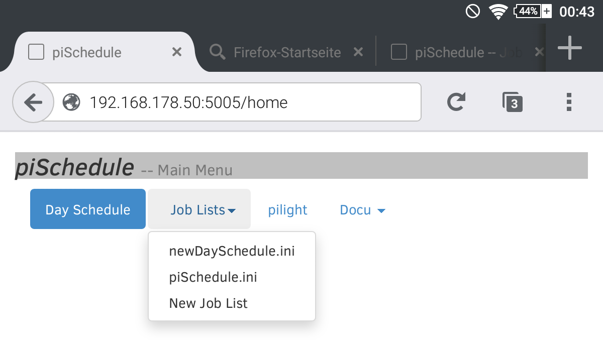
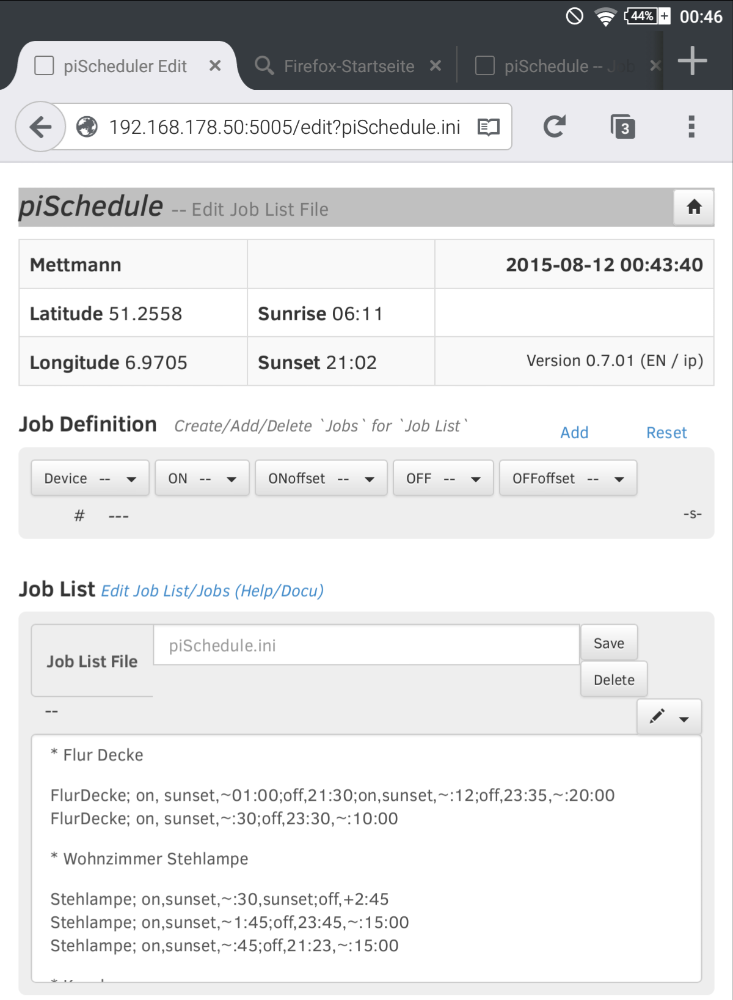
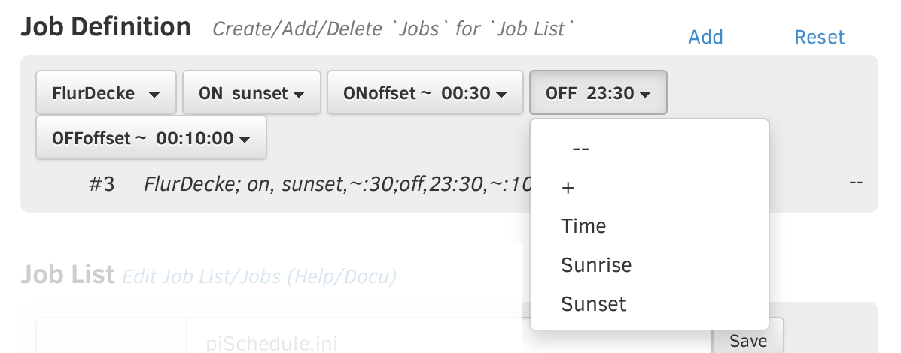
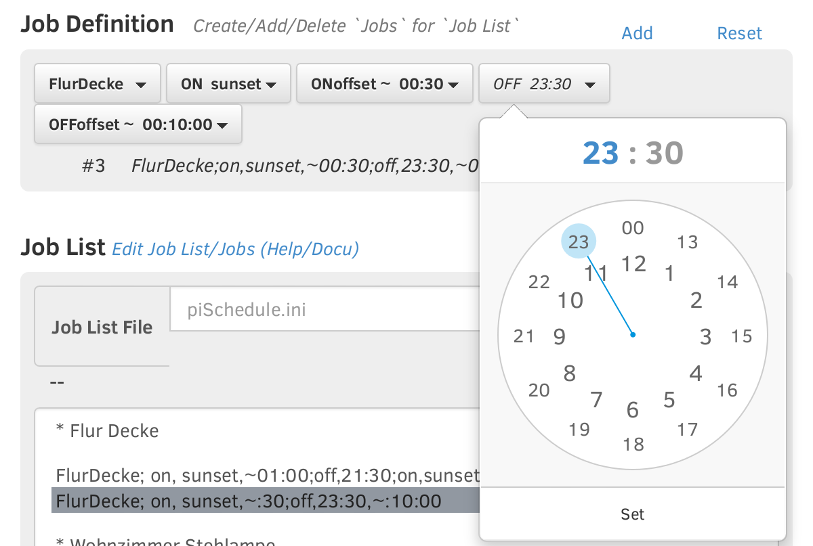

piSchedule Edit Day Schedule / Job vers.0.7.2 2017-01-17_21
Devices defined with pilight can be time switched using piSchedule. Defining a switch time for a device is called a 'Job'. A collection of 'Jobs' are stored to a 'Day Schedule' files (.INI/Text format) and are processed by piSchedule.
Also the .INI/Text file can be edited on the Raspberry with a normal editor (e.g. 'nano' or 'vi'), a more convientient methode is the use of the Day Schedule/Job Editor. It's called from the piSchedule main menu:

The menu button [Job Lists] also has a list of all available Job Lists (.ini text/files), select the list for opening/editing the containing 'Jobs':

The dialog has three parts
- Current 'Preference' values for sunrise/sunset based on the geolocation, the version number and locale indicator, and the current day/time
- Job Definition -- buttons and menus used to compose or edit a single Job and add it to the 'Job List'
- Job List -- holds the 'Jobs' on the
opened/edited .INI-file.
Job Definition
device
, it's switch state
ON/OFF
and switch
Time
values. The 'Job Definition' supports the creation of 'Jobs' with six buttons and a text line.
The buttons are pull-down menus to select a 'Device' to be switched (the device are read from pilight config.json), the switch time for 'ON' and/or 'OFF' and possible time 'Offset' with fixed or random values. 'ON'/'OFF' can be based on sunrise or sunset. Time values can have a random modifier.
ON/OFF Time

The menu item [ + ] of the 'OFF' menu makes it possible to define a time difference between the resulting 'ON' time and the 'OFF' time.
With the menu item [ Time ] the already defined time value (see example 23:30) -- or if not set already the actual time -- is used to preset the time value with the next dialog part:

After hour or minutes slection at the top the pointer can be moved to the required time value. Use [ Set ] to close and take the time for the button.
ON/OFF Offset time -- absolute or random
The buttons [ + ] and [ - ] set a defined value, [ random ] and [ random minus ] generate a random offset value. The value defines a span and the random value will be in that span. With [ random minus ] the point of time will be before the time defined with [ ON ] or [ OFF ].
Note: The resulting point of time will be calculated at the moment the 'Job' is activated as part of the 'Job List'
Button [ Add ]
Button [Reset]
Textline below the buttons
Job List
The part of the page for "Job List" has the following sections:
- Show the name of the opened "Job List File" with two buttons to store and delete the named file.
- A textbox which holds all Jobs of the file and the configured changes
- Right above the textbox a menu button (pencil symbol) offers some methods to work with the selected 'Job'
Working with the "Job List"
To work with a row of the Job List activate it and open the menu (pencil symbol)
- [Edit] writes the selected row/job to the
'Job Definition'. That way the selected job definition will be
used to preset the buttons for job configuration and writes it
also to the textrow. Thhat done, the job can be edited.
As mentioned above the menu button [ Add ] will write back the changed job before the selected row/job. The original will not be overwritten, but it can be removed the menu. - [Erase] removes the selected job from the Job List
- There are two button to shift a job up/down the Job List
- [Advance Edit Row] used to add/edit comments or empty rows for better readability or to edit directly the selected row/job. (A 'comment' always starts with a star *)
© gNeandr -- piSchedule is a free Open Source Project -- Feel free to use it.
 Donate what piSchedule is worth for you.
Donate what piSchedule is worth for you.
For Comments, Questions and Feedback please use piSchedule Forum